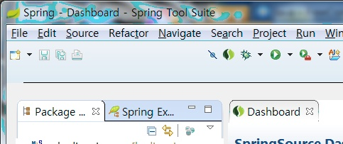
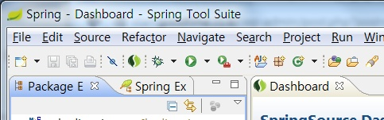
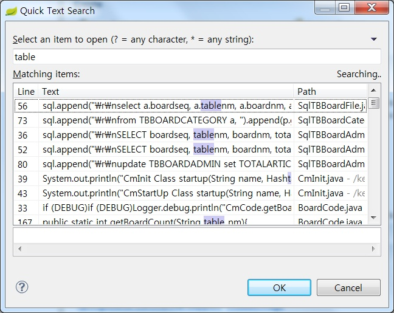

지난 7월 10일 Spring Tool Suite(이하 STS) 3.3.0이 발표됐다. 3.2 버전이 그전의 부진을 깨끗이 씻고 아주 만족스러웠던 터라 3.3이 나오기를 손꼽아 기다린 건 아니었지만 3.2 발표 때 앞으로도 성능 개선에 노력할 것이라는 약속이 있었기 때문에 궁금해서 사용해보게 됐다.
결론부터 말하자면 3.3을 사용하면 좀더 개발 만족도가 높아지겠으나 3.3을 사용하지 않는다고 시대에 뒤쳐지거나 뭔가 부족한 개발자가 되지는 않겠다 정도로 요약할 수 있겠다. 아래는 이클립스 3.8 기반의 STS 3.2 64비트 윈도 버전을 사용하다가 이클립스 4.3 기반의 STS 3.3.0을 사용해본 리뷰다.
UI 테마는 역시 클래식이 최고야
이클립스 Juno부터 추가된 UI 테마는 STS에도 계속 적용돼왔는데 이번에도 새 테마들은 영 문제가 있다. 예를 들어 다음이 기본 테마인데 아이콘 배치가 이상하다. 공백이 왜 이리 넓지? 아이콘 셋 이동도 안 된다.

아래는 클래식 테마로 바꾼 화면이다. 짜임새 있고 보기도 좋지 않은가? 역시 Eclipse는 이 스타일이어야 해.

이클립스 케플러(Kepler) 릴리즈 반영
1년에 한번 발표되는 이클립스 버전업인 케플러가 반영됐다. 케플러에는 Java EE 7 지원, 웹 기반 개발 플랫폼인 Orion의 개선, 리포팅 툴인 BIRT에 MongoDB 등의 빅데이터 지원 등이 들어가 있다. 물론 STS는 웹 개발 위주의 도구이므로 케플러의 모든 프로젝트가 다 반영됐다는 말은 아니다.
Quick Text Search
이클립스에는 기존에도 전체 파일에서 검색하는(ctrl-h) 기능이 있었는데 STS에서는 독자적으로 "빠른 텍스트 검색(ctrl-shift-L)"이라는 기능을 추가했다. 이 블로그 글에서 자세히 설명하고 있지만 기존 검색과 달리 검색 범위라든가 조건을 설정하는 것 없이 바로 텍스트를 검색하고자 할 때 유용하다.
검색어를 한 글자라도 입력함과 동시에 바로 검색이 시작되며 현재 열린 파일부터 시작해서 전체 웍스페이스로 점차 검색 범위를 넓혀가기 때문에 연관성이 높은 결과를 빠르게 찾을 수 있다.
개인적으로는 텍스트를 검색하는 범위를 명확히 지정해서 찾는 경우가 많기 때문에 ctrl-h도 계속해서 많이 사용하면서 이 기능을 점차 많이 사용할 것 같다.

새로워진 Spring 프로젝트 만들기 마법사
Spring 프로젝트 만들기 마법사가 Web 프로젝트 만들기와 Maven 프로젝트 만들기를 통합해서 좀더 유용해졌다. 전에는 두 가지를 별개로 적용해야 했는데 이제 프로젝트 만드는 단계부터 두 가지를 한 번에 고려할 수 있다.
그 밖에
3.2에서 워낙 성능이 향상됐던 터라 3.3이 다시 한번 혁신적으로 빨라진 건 아니지만 전반적인 체감 성능은 좀더 좋아진 듯 하다. 특히 STS를 종료할 때는 종료 진행 대화창이 몇 초는 떠 있던 전과는 다르게 거의 바로 닫힌다.
STS를 처음 시작할 때 오늘의 팁(?) 같은 걸 보여준다. 황당한 건 팁이 몇 개 없다. 몇 번만 돌면 본 게 또 나온다.
텍스트 에디터에서 영문만 입력하다가 한글을 입력하면 그 순간 줄 간격이 살짝 커지는 현상이 3.2까지 있었는데 이제 그런 현상이 없다. 한글만 많은 파일은 상대적으로 줄 간격이 좁아 답답해보인다.
JSP나 HTML처럼 문자셋이 지정되는 파일 형식을 작업할 때 이클립스에 문자셋을 틀리게 지정한 경우(예를 들어 949 문자셋의 파일인데 8859-1 파일로 열게 된 경우) 뭔가 수정하고 저장하면 3.2에서는 그 파일의 문자셋이 변환 저장돼버렸는데 이제는 컨텐트를 그대로 잘 유지한다. 즉 먼저 저장하고 나중에 문자셋을 맞게 지정하더라도 문제가 없다.
사용 시간이 많지 않아 좀더 깊은 리뷰가 되지는 못한 것 같다. 이클립스가 참 많이 발전해왔다는 생각이 든다.